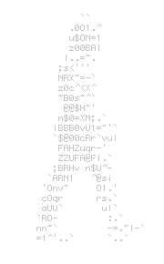

Bienvenue
Ce site me sert de vitrine, c'est ici que j'afficherais mes projets dans le domaine de l'informatique.
Le design du site se veut simple, parce qu'il est inutile de rendre complexe des choses simples.
Une autre version du site est en développement, celui-ci utilise du PHP afin de mettre en place un
système de comptes et de requêtes.